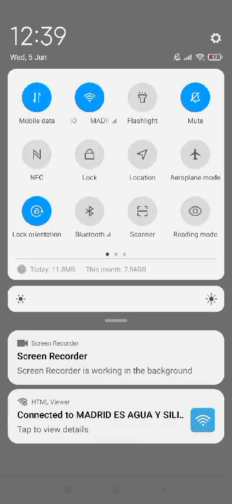
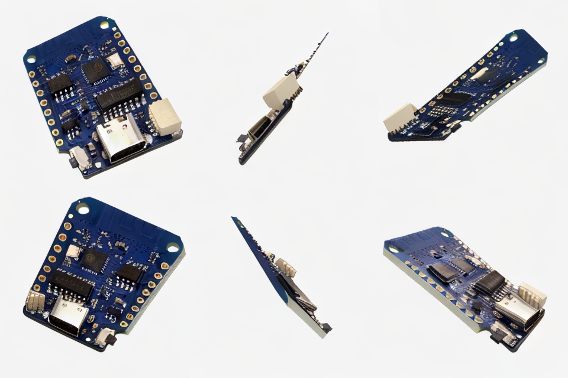
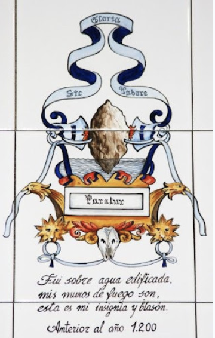
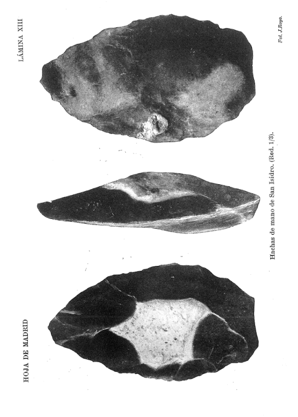
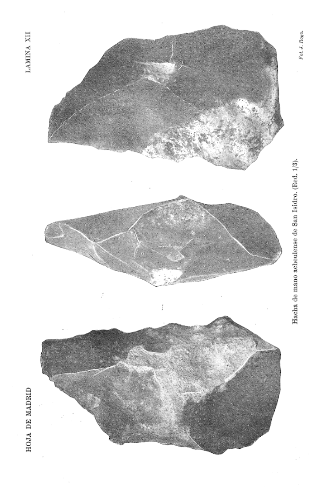
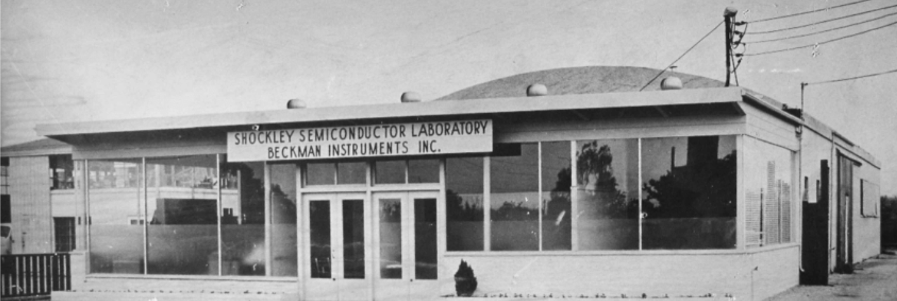
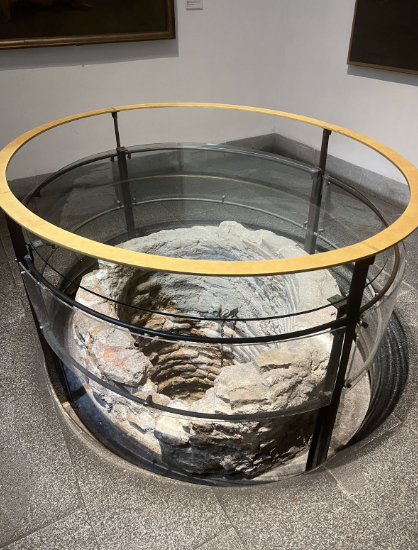
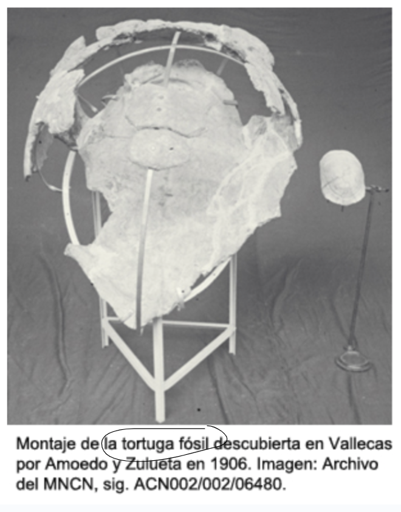
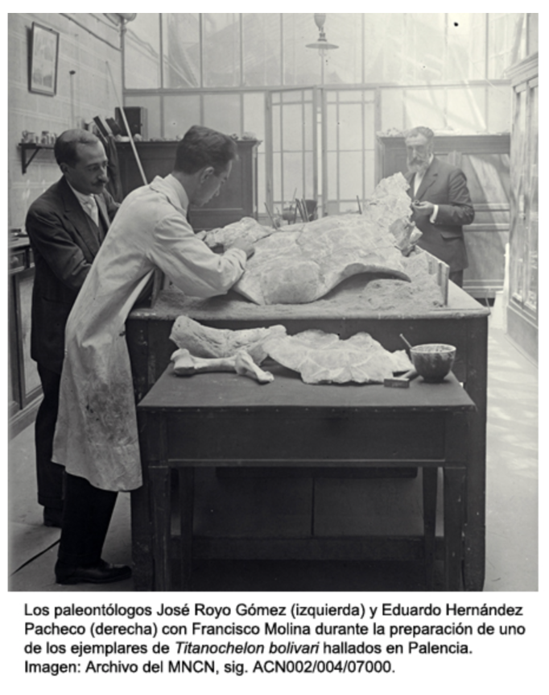

Sílex y agua es una investigación documental y artística que plantea la reconexión emocional de la ciudad de Madrid con su pasado a través de dos elementos clave para el funcionamiento de las redes de Internet hoy: el agua y el silicio. Para ello, se configura un ensayo visual con piezas de la colección digitalizada del Museo de San Isidro de Madrid, en la que se recoge la memoria arqueológica y mítica de la ciudad. Este ensayo audiovisual se aloja y se difunde a través de un portal wi-fi que puede ser instalado en cualquier punto de la ciudad. Accede al código aquí. Accede al archivo aquí.








